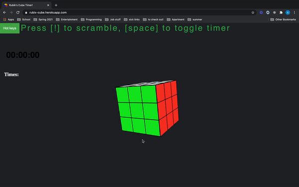

back
Work Experience
-
I spent my 2020 summer as a Fullstack Development Intern at Halo -
a marketplace and network that moves science forward by connecting scientists directly with
companies for research collaborations and funding opportunities.
-
My tasks included:
- Designing and implementng an inbox/messaging system for users.
- Implementing a contact modal connected to HubSpot (using the HubSpot API)
- Udating the Privacy Policy and Terms of Service pages to match new UX design
-
Technologies used: React, Redux, Ruby/Rails, JavaScript, MySQL, HTML5, CSS3
Personal Projects
- I implemented a working 3D model of a Rubik's cube using P5.js and javascript out of my love for solving Rubik's cubes and an interest in 3D modeling!
- Programmed using P5.js and javascript and hosted using Heroku.
- GitHub Repository

- I programmed an automated Twitter "bot" to post a tweet with a random quote and a random gif every 4 hours.
- Provided an excercise in using public APIs (Twitter and Giphy). Hosted using Heroku.
- Github Repository
- Live feed viewable below:
Fullstack Academy Projects
-
I attended Fullstack Academy--a 13 week web-development bootcamp
that taught the best technologies and practices for modern web development.
-
The first half of the course was focused on teaching the necesary technologies, from front end to back end.
The second half of the course was project-based and intended to help us hone our newly acquired web-development knowledge.
-
Below is a demo of a 2-week-long group project where we were tasked to create an
e-commerce site with a working shopping cart, user and admin accounts, and Google OAuth authentication.
- Link to the project (hosted on Heroku)
- Project Github Repository